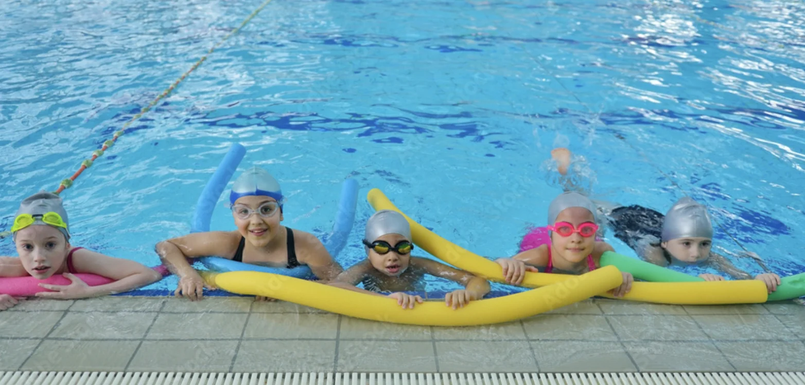

A place to start.
Pay-as-you-go visits and membership options help you choose how LeisureWorld fits your routine.
Explore pricesAbout LeisureWorld
A morning swim. A new skill. A little time together. LeisureWorld is part of everyday life in Cork.

LeisureWorld is operated by Spórt-Ionad Réigiúnach Chorcaí CLG, known as LW Management, on behalf of Cork City Council. Our three leisure centres are Bishopstown, Churchfield and Gus Healy Pool in Douglas.
We bring swimming, exercise and recreation into local communities. Facilities differ by centre, with public swimming, lessons, gyms, classes and pitches across the network.
Pay-as-you-go visits and membership options help you choose how LeisureWorld fits your routine.
Explore pricesFind swimming, gym sessions, classes and programmes for different stages of life.
Explore activitiesTell us about any support you need before your visit so the team can help you plan.
Access informationLW Management also operates Mahon Golf Course and St. Peter’s Cork. The organisation has managed community facilities in Cork since 1997.